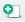
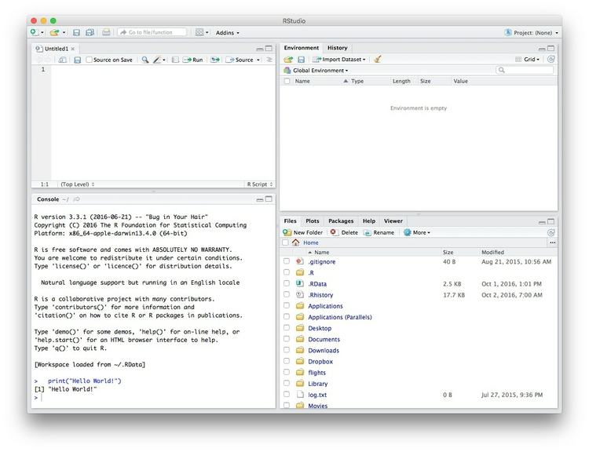

It is possible to make JavaScript visualizations directly from R/RStudio, thanks to a group of packages collectively known as htmlwidgets.
These packages take instructions in R code, and write the JavaScript and HTML necessary to draw charts using JavaScript visualization libraries. They allow you to easily export the charts you create in R as web pages, which can be embedded in other projects through simple iframes.
This means that you can work in a single environment to both process data and make online charts. Maintaining a simple, streamlined workflow makes it easier to produce graphics quickly on news deadlines.
Download the data for this session from here and unzip the folder. This data should already be loaded on the machines at the NICAR meeting:
nations.csv Data from the World Bank Indicators portal. Contains the following fields:iso2c iso3c Two- and Three-letter codes for each country, assigned by the International Organization for Standardization.country Country name.year From 1990 to 2015.population Estimated total population at mid-year, including all residents apart from refugees.life_expect Life expectancy at birth, in years.population Estimated total population at mid-year, including all residents apart from refugees.birth_rate Live births during the year per 1,000 people, based on mid-year population estimate.neonat_mortal_rate Neonatal mortality rate: babies dying before reaching 28 days of age, per 1,000 live births in a given year.region income World Bank regions and income groups, explained here.gdp_percap Gross Domestic Product per capita in current international dollars, corrected for purchasing power in different territories.seismic_risk_clip Folder containing this U.S. Geological Survey shapefile, detailing the risk of experiencing a major earthquake, clipped to the boundaries of the continental United States.Data journalism should ideally be fully documented and reproducible. R makes this easy, as every operation performed can be saved in a script, and repeated by running that script. Click on the  icon at top left and select R Script. A new panel should now open:

Any code we type in here can be run in the console. Hitting Run will run the line of code on which the cursor is sitting. To run multiple lines of code, highlight them and click Run.
Click on the save/disk icon in the script panel and save the blank script to the folder on your desktop continaing the data for this class, calling it r-to-javascript.R.
Now we can set the working directory to this folder by selecting from the top menu Session>Set Working Directory>To Source File Location. (Doing so means we can load the files in this directory without having to refer to the full path for their location, and anything we save will be written to this folder.)
The panel at top right has two tabs, the first showing the Environment, or all of the “objects” loaded into memory for this R session. We can save this as well, so we don’t have to load and process data again if we return to return to a project later.
(The second tab shows the History of the operations you have performed in RStudio.)
Click on the save/disk icon in the Environment panel to save and call the file r-analysis.RData.
In this class, we will work with the following packages:
To install a package, click on the Install icon in the Packages tab, type its name into the dialog box, and make sure that Install dependencies is checked, as some packages will only run correctly if other packages are also installed. Click Install and all of the required packages should install.
Each time you start R, it’s a good idea to click on Update in the Packages panel to update all your installed packages to the latest versions.
Installing a package makes it available to you, but to use it in any R session you need to load it. You can do this by checking its box in the Packages tab. However, we will load packages with the following code. Copy the code into your script, highlight, and Run:
# load required packages
library(readr)
library(dplyr)
library(htmlwidgets)
library(highcharter)
library(RColorBrewer)
library(leaflet)
library(rgdal)
library(dygraphs)
library(quantmod)
library(DT)
The goal of today’s class is to briefly introduce a range of htmlwidgets. To explore all of their options, you will need to study the detailed documentation for each.
This code duplicates one of the examples from yesterday’s NICAR class on data analysis in R. It reads in the World Bank data, calculates the GDP for each country in each year, and then sums the values across World Bank regions for each year.
# load data
nations <- read_csv("nations.csv")
# process data
gdp_regions <- nations %>%
mutate(gdp = gdp_percap * population,
gdp_tn = gdp/1000000000000) %>%
group_by(region, year) %>%
summarize(total_gdp_tn = sum(gdp_tn, na.rm = TRUE))
Draw a basic symbol-and-line chart with default settings:
# basic symbol-and-line chart, default settings
highchart() %>%
hc_add_series_df(data = gdp_regions,
type = "line",
x = year,
y = total_gdp_tn,
group = region)
The following chart should appear in the Viewer panel at bottom right:
In the code above, the function highchart() creates a chart.
Highcharts works by adding data “series” to a chart, and from R you can add the variables from a data frame all in one go using the hc_add_series_df() function. Inside this function we define the data frame to be used, with data, the type of chart, the variables to be mapped to the x and y axes, and the variable to group the data: Here this draws a separate line for each region in the data.
Clicking on the legend items allows you to remove or add series from the finished chart.
See here for the chart types available in Highcharts.
Notice how highcharter uses the %>% or pipe operator, also used with dplyr.
Now we’ll customize the basic chart.
# define color palette
cols <- brewer.pal(7, "Set1")
highchart() %>%
hc_add_series_df(data = gdp_regions,
type = "line",
x = year,
y = total_gdp_tn,
group = region) %>%
hc_colors(cols) %>%
hc_xAxis(title = list(text="Year")) %>%
hc_yAxis(title = list(text="GDP ($ trillion)")) %>%
hc_plotOptions(series = list(marker = list(symbol = "circle")))
The following chart should appear:
The first line of code sets a palette with seven colors, one for each region, using the “Set1” palette from ColorBrewer. This is fed to the function hc_colors() to use those colors on the chart.
The code then adds axis labels, and finally uses the hc_plotOptions() function to override the default of using a different symbol for reach series, switching to use circles for every line.
You can save you code as an R object using the assignment operator (<-).
gdp_regions_chart <- highchart() %>%
hc_add_series_df(data = gdp_regions,
type = "line",
x = year,
y = total_gdp_tn,
group = region) %>%
hc_colors(cols) %>%
hc_xAxis(title = list(text="Year")) %>%
hc_yAxis(title = list(text="GDP ($ trillion)")) %>%
hc_plotOptions(series = list(marker = list(symbol = "circle")))
As object of type highchart should now have appeared in your Environment.
The following code uses the htmlwidgets package to export the chart as a standalone web page, with supporting assets (JavaScript libraries and CSS files) saved in a folder called src.
saveWidget(gdp_regions_chart, "gdp_regions.html", selfcontained = FALSE, libdir = "src", background = "white")
Open the saved webpage in a web browser, and see what happens when you change the window size. The chart should be completely responsive, expanding or contracting to fill the available space.
This means that is can be dropped into another webpage in the same folder using a simple iframe:
<iframe src="gdp_regions.html" width="100%" height="500" frameborder="0" marginheight="0" marginwidth="0"></iframe>
Here the iframe is given a constant height of 500px and a width of 100%, allowing for responsive design.
We are going to recreate a version of this map, which I originally coded using Leaflet from scratch.
First let’s see how to make a basic Leaflet map, centered on Jacksonville:
# make leaflet map centered on Jacksonville
leaflet() %>%
setView(lng = -81.65, lat = 30.3, zoom = 11) %>%
addTiles()
The function leaflet() creates a leaflet map; setView() sets the starting position of the map, centering it on the defined coordinates and with the defined zoom level; addTiles() adds OpenStreetMap tiles to the map, which would otherwise be blank. Notice that the map is interactive, and can be panned and zoomed just like a Google Map.
We aren’t limited to using OpenStreetMap tiles:
# make leaflet map centered on Jacksonville with Carto tiles
leaflet() %>%
setView(lng = -81.65, lat = 30.3, zoom = 11) %>%
addProviderTiles("CartoDB.Positron")
The function addProviderTiles() uses the Leaflet Providers plugin to add various tiles to a map. You can see the available options here.
Now load the data we need to make the earthquakes map, starting with the seismic_risk shapefile, using the readOGR() function from rgdal.
# load seismic risk shapefile
seismic_risk <- readOGR("seismic_risk_clip", "seismic_risk_clip")
The two mentions of seismic_risk_clip refer to the folder and the shapefile within it, respectively.
You should now have in your environment an object called seismic_risk which is a SpatialPolygonsDataFrame.
We can also load data on earthquakes, directly from the U.S. Geological Survey API:
# load quakes data from USGS earthquakes API
quakes <- read_csv("http://earthquake.usgs.gov/fdsnws/event/1/query?starttime=1965-01-01T00:00:00&minmagnitude=6&format=csv&latitude=39.828175&longitude=-98.5795&maxradiuskm=6000&orderby=magnitude")
Using this url, we have loaded earthquakes since the start of 1965 that had a magnitude of 6 and above, within a 6,000 kilometer radius of the geographic center of the continental United States.
Let’s look at a summary of the seismic_risk data
# view summary of seismic_risk data
summary(seismic_risk)
This should be returned in the R Console:
Object of class SpatialPolygonsDataFrame
Coordinates:
min max
x -124.71 -66.98701
y 24.60 49.36968
Is projected: FALSE
proj4string :
[+proj=longlat +datum=WGS84 +no_defs +ellps=WGS84 +towgs84=0,0,0]
Data attributes:
ACC_VAL VALLEY
Min. : 0.00 Min. :0.00000
1st Qu.: 18.00 1st Qu.:0.00000
Median : 40.00 Median :0.00000
Mean : 44.57 Mean :0.08264
3rd Qu.: 60.00 3rd Qu.:0.00000
Max. :200.00 Max. :1.00000
The data defining the risk of a major earthquake is in the variable ACC_VAL, and has values that run from 0 to 200.
We are going to make a choropleth map, so we will first set breaks to divide the data in into bins:
# set breaks for custom bins
breaks <- c(0,19,39,59,79,200)
Then set a color palette, using these breaks and a “Reds” sequential color scheme from ColorBrewer (which can be called by name in the leaflet package):
# set palette
binpal <- colorBin("Reds", seismic_risk$ACC_VAL, breaks)
Now we are ready to make a choropleth map, using the following code:
# make choropleth map of seismic risk
leaflet(seismic_risk) %>%
setView(lng = -98.5795, lat = 39.828175, zoom = 4) %>%
addProviderTiles("CartoDB.Positron") %>%
addPolygons(
stroke = FALSE,
fillOpacity = 0.7,
smoothFactor = 0.1,
color = ~binpal(ACC_VAL)
)
The function addPolygons() adds polygons to the map: stroke = FALSE gives them no outline; fillOpacity = 0.7 makes them slightly transparent; color = ~binpal(ACC_VAL) uses the color palette and breaks we set up earlier to color the polygons according to values in the ACC_VAL data.
smoothFactor controls the extent to which the polygons are simplified. See what happens to the map if you replace 0.1 with 10. Simplified polygons will load more quickly, but there’s a tradeoff with the appearance of the map. Choose an appropriate value for your maps through trial and error.
We can add circles for the quakes as a second data layer by extending the code as follows:
# make choropleth map of seismic risk
leaflet(seismic_risk) %>%
setView(lng = -98.5795, lat = 39.828175, zoom = 4) %>%
addProviderTiles("CartoDB.Positron") %>%
addPolygons(
stroke = FALSE,
fillOpacity = 0.7,
smoothFactor = 0.1,
color = ~binpal(ACC_VAL)
) %>%
# add historical earthquakes
addCircles(
data = quakes,
radius = sqrt(10^quakes$mag)*50,
color = "#000000",
weight = 0.2,
fillColor ="#ffffff",
fillOpacity = 0.3,
popup = paste0("<strong>Magnitude: </strong>", quakes$mag, "</br>",
"<strong>Date: </strong>", format(as.Date(quakes$time), "%b %d, %Y"))
)
The addCircles() function adds circles to the map, drawn from the quakes data; color sets the color for their outlines, while weight sets the thickness of these lines; fillColor and fillOpacity style the circles’ interiors.
The size if the circles is set by radius = sqrt(quakes$mag^10)*50. Here 50 is simply a scaling factor for all of the circles, set by trial and error to give a reasonable appearance on the map. The size of the circles is set from the variable mag in the quakes data, which is their magnitude. We have raised 10 to the power of these magnitude values: This is a quirk of working with earthquake magnitudes, which are on a logarithmic scale, so that a magnitude difference of 1 corresponds to a 10-fold difference in earth movement, as recorded on a seismogram.
When scaling circles, use the values from the data, and then take their square roots, using the sqrt() function. This is important, to ensure that the circles are scaled correctly, by area, rather than by radius.
popup is used to define the HTML code the appears in the popup that appears when any quake is clicked or tapped. Here we used the R function paste0() to paste together a series of elements, separated by commas, that will write the HTML. They include the mag and time values from the quakes data, the latter being formatted as an easy-to-read date using R’s format() function for dates. See here for more on formatting dates in R.
Having completed our map, we can again save it as an R object, and then save as a webpage.
# make choropleth map of seismic risk
seismic <- leaflet(seismic_risk) %>%
setView(lng = -98.5795, lat = 39.828175, zoom = 4) %>%
addProviderTiles("CartoDB.Positron") %>%
addPolygons(
stroke = FALSE,
fillOpacity = 0.7,
smoothFactor = 0.1,
color = ~binpal(ACC_VAL)
) %>%
# add historical earthquakes
addCircles(
data = quakes,
radius = sqrt(10^quakes$mag)*50,
color = "#000000",
weight = 0.2,
fillColor ="#ffffff",
fillOpacity = 0.3,
popup = paste0("<strong>Magnitude: </strong>", quakes$mag, "</br>",
"<strong>Date: </strong>", format(as.Date(quakes$time), "%b %d, %Y"))
)
# save as a web page
saveWidget(seismic, "seismic.html", selfcontained = FALSE, libdir = "src", background = "white")
One issue with the leaflet package is that there is no function to disable scrollwheel zoom, which leads to maps zooming out when scrolling using a touchpad or screen. To prevent this happening, include this file (here is some background from its author) in the src folder, which sleeps the map until hovered or clicked. You will also need to add this line of code between the <head> </head> tags of the web page:
<script src="src/Leaflet.Sleep.js"></script>
Dygraphs is designed for drawing time series charts, including stock charts. First we will grab historical stock data for three large technology companies using the quantmod packahe
Quantmod returns R xts objects, for “extensible time series.” We’ll combine the adjusted daily closing prices for each company into a single xts object, and then draw a chart.
# retrieve data for each company
google <- getSymbols("GOOG", src = "yahoo", auto.assign = FALSE)
facebook <- getSymbols("FB", src = "yahoo", auto.assign = FALSE)
amazon <- getSymbols("AMZN", src = "yahoo", auto.assign = FALSE)
# combine adjusted prices into a single xts object
companies <- cbind(google$GOOG.Adjusted, facebook$FB.Adjusted, amazon$AMZN.Adjusted)
# rename the variables, so that they displace nicely in the legend
names(companies) <- c("Google","Facebook","Amazon")
# draw a stock chart
dygraph(companies)
# customize the chart
dygraph(companies, ylab = "Adjusted close") %>%
dyOptions(colors = brewer.pal(3, "Set1")) %>%
dyRangeSelector() %>%
dyAxis("x", drawGrid = FALSE)
Colors can be set, here using RColorBrewer, in the dyOptions() function. The dyRangeSelector() function adds the date selector slider control at the bottom of the chart. The dyAxis() function is here configured to turn off vertical grid lines on the chart. The Y axis label is added using ylab in the initial dygraph() function.
The chart can be saved as an R object and exported as a web page as for the earlier examples.
Finally we will make a searchable HTML table using the DT package.
First, we’ll process the nations data to present data on life expectancy for each nation in 2014, sorted from highest to lowest, also showing their region and World Bank income group.
# filter data for 2014 only
longevity <- nations %>%
filter(year == 2014 & !is.na(life_expect)) %>%
select(country, life_expect, income, region) %>%
arrange(desc(life_expect))
# rename the variables for display in the table
names(longevity) <- c("Country","Income group","Region","Life expectancy")
This is as simple as running the function datatable() on the longevity data.
datatable(longevity)
The table can be sorted by clicking on the column headers, and searched using the search box.
The table easily can be customized.
datatable(longevity,
rownames = FALSE) %>%
formatStyle("Life expectancy",
color = "red",
fontWeight = "bold")
Setting rownames to false in the datatables() function removes the numbering of the rows in the table. The formatStyle here sets the font color and weight for the Life Expectancy column.
These examples illustrate the potential of htmlwidgets. There are many more which we have not covered. Understanding how the code for each works and can be customized will take some time. But if you follow the documentation, the results can be impressive.
htmlwidgets Showcase
Links to documentation and code examples for the leading htmlwidgets.
htmlwidgets Gallery
A more extensive collection of htmlwidgets